A tecnologia é uma poderosa ferramenta de transformação, mas o que realmente faz a diferença são as pessoas.
Elas devem ser a nossa prioridade em qualquer situação. Técnicas e ferramentas podem ser ensinadas,
mas extrair o melhor das características individuais é o que realmente faz diferença no dia a dia.
O trabalho em equipe envolve conhecer os membros e entender suas motivações para trabalhar com o melhor de cada um.
Isso gera profissionais motivados que se realizam e crescem,
o que impacta diretamente no desenvolvimento da empresa.
Sobre mim
Com experiência em design web, front-end e formação, tenho habilidades para desenvolver interfaces amigáveis,
atrativas e otimizadas. Sou capaz de criar conteúdos didáticos e treinar pessoas. Também possuo flexibilidade
para me adaptar a diferentes ambientes e gosto de aprender.
Perfil profissional
História curta
Quando entrei na universidade, ganhei meu primeiro computador e aceitei um convite para ser professora voluntária
em um curso de assistência social. Foi assim que descobri duas paixões. Troquei de curso para licenciatura e,
depois de me formar, ficava até de madrugada para poder acessar a internet. Aprendi HTML e criei meu primeiro site.
Em seguida, fiz um curso de WebDesign, onde tive dois professores. Ambos indicaram-me para os meus primeiros empregos
na área.
Linha do tempo em webdesigner
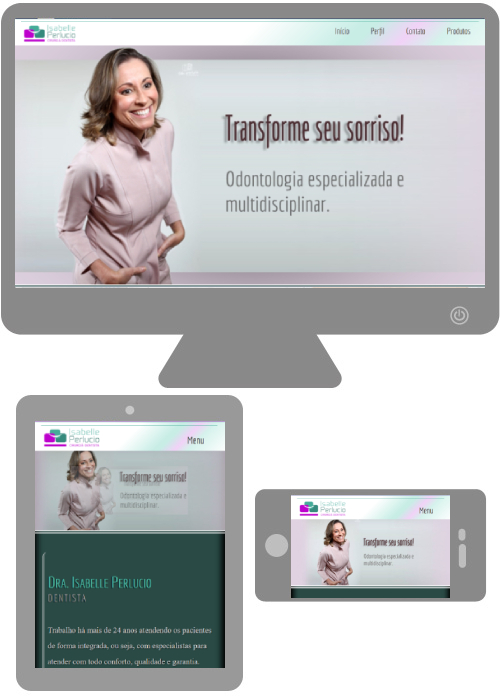
Fevereiro de 2020.
Um novo site para uma cliente antiga. Fiz seu primeiro site em 2011 com foco em SEO, o que atraiu muitos pacientes
e a deixou ainda mais satisfeita. Em 2020, ela precisava de um site dinâmico para aumentar sua visibilidade e
complementar seu trabalho nas mídias sociais.
Trabalho solo desenvolvido em WordPress.
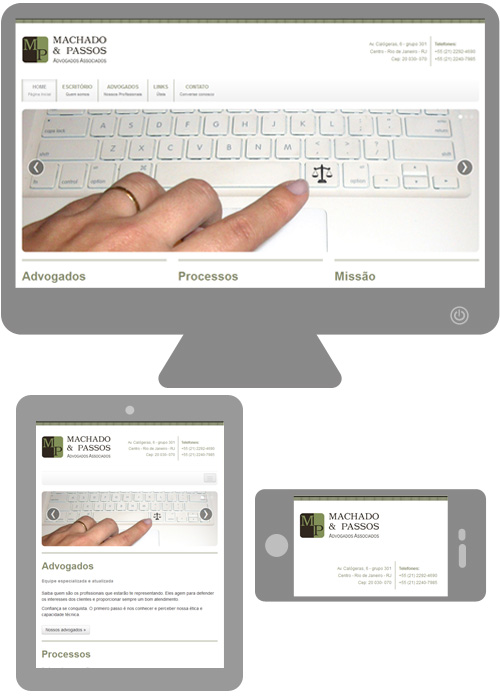
Fevereiro de 2014.
Site responsivo para o escritório de advocacia Machado Passos.
Trabalho solo desenvolvido em HTML5 com Bootstrap.
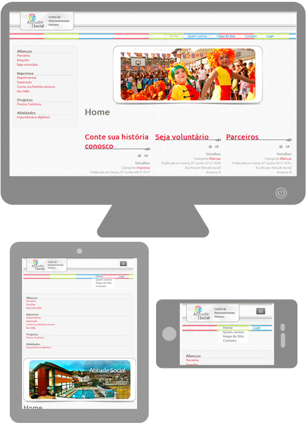
Maio de 2013.
Trabalho solo realizado a serviço da empresa Montreal Informática para atender a ONG Atitude Social.
Desenvolvido em Joomla com Bootstrap.
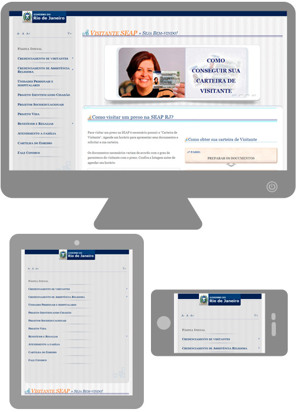
Maio de 2013.
Site para a SEAP (Secretaria de Estado de Administração Penitenciária) do Rio de Janeiro para atender os visitantes dos apenados.
Desenvolvido em maio de 2013 para a empresa Montreal Informática atender a Secretaria de Administração Penitenciára do
Estado do Rio de Janeiro. Desenvolvido em Bootstrap, atendendo critérios de acessibilidade (dimensionamento de letras,
css alternativo de alto contraste, links ocultos para cegos,...) e seguindo os padrões colocados para sites do governo.
Desenvolvido em conjunto com programadores Java
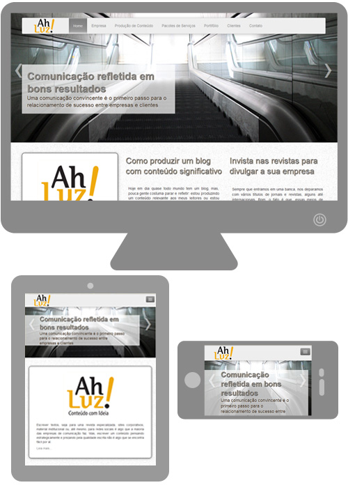
Dezembro de 2012
Site para a para a empresa Ah! Luz - Conteúdo com idéia.
Trabalho solo desenvolvido em Joomla com Bootstrap
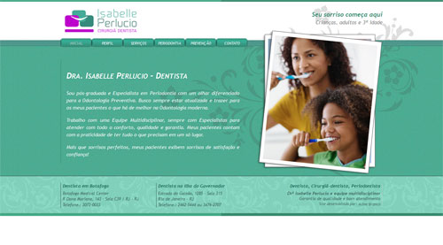
Outubro de 2011.
Marca, papelaria e site cross-browser. Refeito em 2020 com WordPress.
Trabalho solo com foco em SEO.
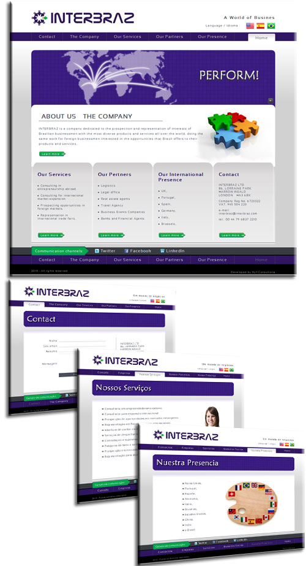
Outubro de 2010.
Marca e site.
Trabalho solo com foco em SEO.
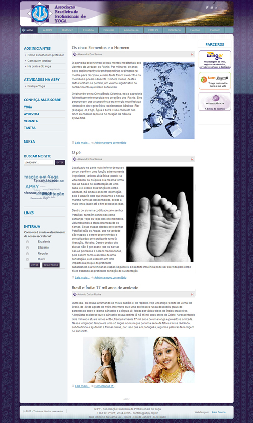
Junho de 2010.
Site com desenvolvimento de template excluivo.
Trabalho solo com uso de Joomla.
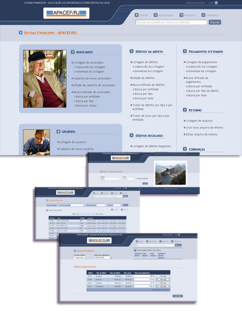
Janeiro de 2010.
Sistema interno da empresa.
Desenvolvido com programadores em Ruby.
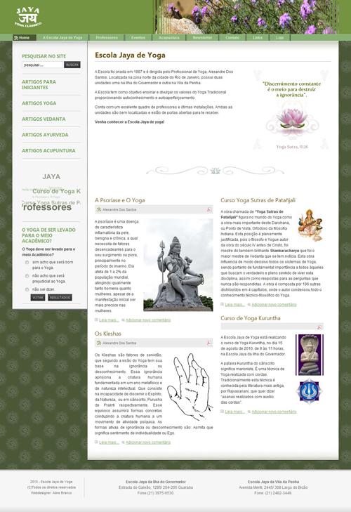
Dezembro de 2009.
Site com desenvolvimento de template excluivo.
Trabalho solo com uso de Joomla.
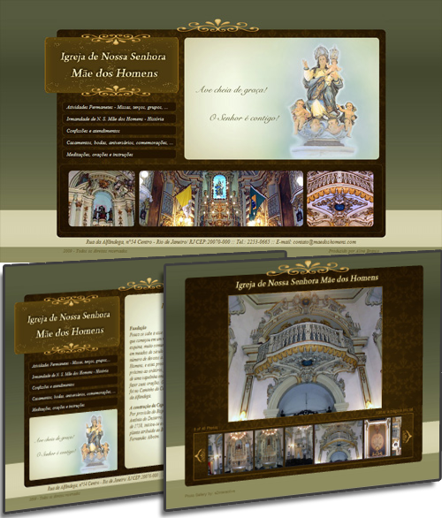
Julho de 2009.
Site de Igreja tombada pelo Patrimônio Histórico Nacional, ponto religioso e turístico.
Trabalho solo e voluntário para atender o pedido da irmandade responsável.
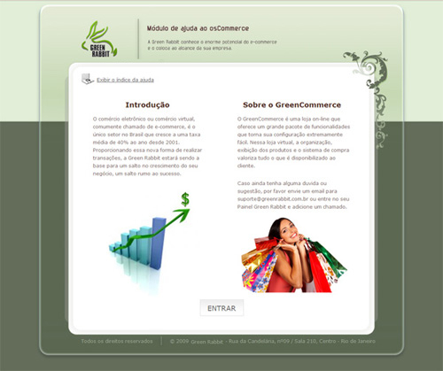
Junho de 2009.
Sistema de ajuda para usuários do OsCommerce na empresa Green Habbit.
Desenvolvido com programadores PHP.
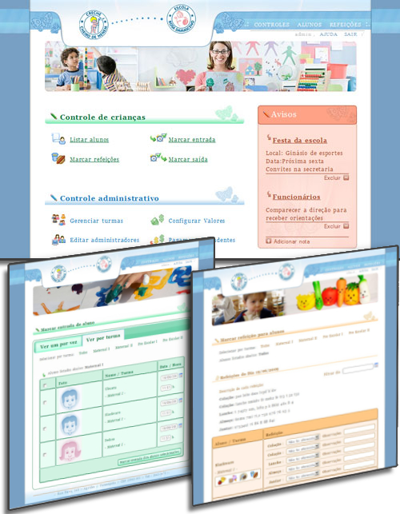
Julho de 2008.
Sistema interno da creche/escola.
Desenvolvido com programadores PHP
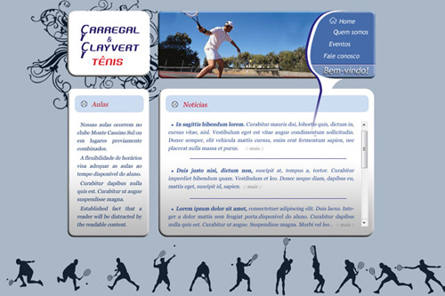
Junho de 2008.
Marca e site para dupla de professores de Tênis.
Desenvolvido com programadores PHP.2007 e 2008.
Criação em Flash de diversos banners para propaganda ou composição de layouts de sites em HTML.
Criação de alguns sites completamente em Flash.
Animações curtas ou em loop e interações através de ActionScript.
2006 - Comecei a trabalhar como webdesigner em ensino e distância. No mesmo ano, comecei a trabalhar como webdesigner no desenvolvimento de sistemas e sites.
2005 - Entrei num curso de WebDesign no SENAI
2003 - Criei meu primeiro site.
2002 - Concluia a faculdade, trabalhava como professora e comecei ter mais tempo para usar a internet.